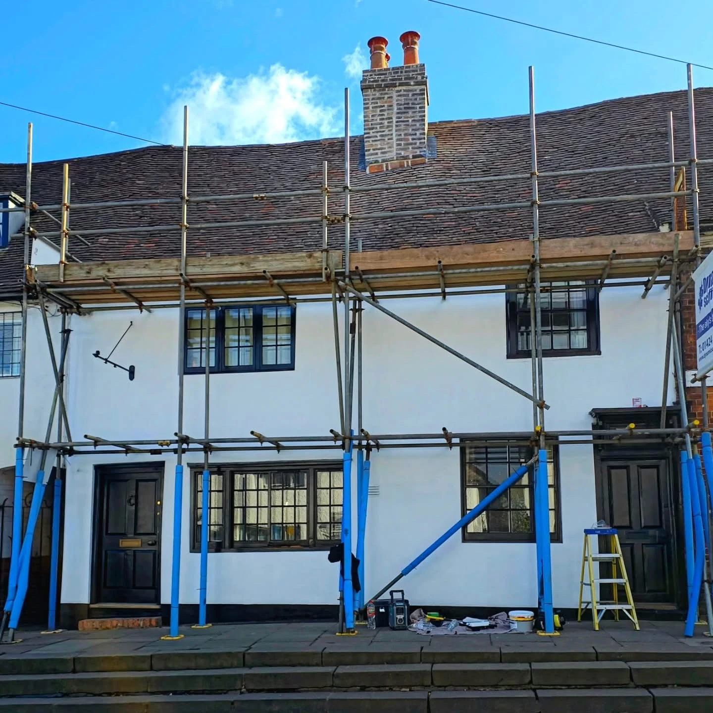
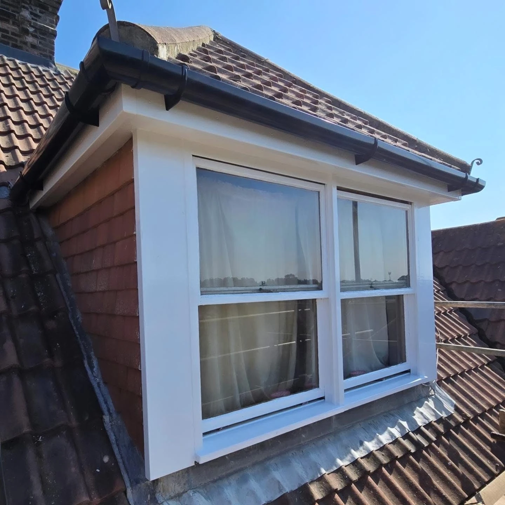

Dormer & roofline details
Timber and window details, followed by the finished white trim and guttering.

REPAIR · REFRESH · IMPROVE
From weathered exterior details to a ceiling in need of repair, small changes and larger projects both deserve a considered approach.
A.J. Williams Property Maintenance serves East Sussex and surrounding areas, covering roofing, guttering, soffits and fascias, building work, plastering, decorating and general maintenance. Send photographs and a description for a free quotation.
Start with your project →
BEFORE & AFTER
The original UPVC doors and trims were replaced with bespoke timber doors and trims. See the project photos side by side, or tap either one for the full view.
Carpentry & repairs →PROJECT TRANSFORMATIONS
Matching photographs show the work at each property. Tap any image to open it at full size, with the original labels preserved.
Timber and window details, followed by the finished white trim and guttering.
The same black front door and surrounding exterior before and after refurbishment.
A damaged ceiling followed by the newly plastered ceiling in the same room.
PROPERTY MAINTENANCE
Tell us about the issue, the finish you are aiming for and any work already carried out. Clear photographs help explain the starting point.
Discuss the work →A.J. WILLIAMS
Whether the job is outside at the roofline or inside the home, start with a conversation about what needs doing. Share the practical details so the scope and availability can be discussed.
Send clear photographs, a short description and your postcode.
Tell us about the repair or improvement and your preferred finish.
Discuss the quotation, access and availability before arranging the job.
LOCAL PROPERTY MAINTENANCE
Roofing, repairs, plastering, decorating and general property maintenance across East Sussex. Send your postcode and photographs for a free quotation.
LET’S TALK ABOUT YOUR PROJECT
Choose the service and tell us about the job. The form opens a WhatsApp message for you to review and send. Add photographs there to help explain the work.
ajwilliams.propertymaintenance@gmail.com
Free quotations across East Sussex and surrounding areas. Include your postcode and a few photographs of the job.
Your details are shared only when you send the message. Privacy information.GOOD TO KNOW
Roofing, guttering, soffits and fascias, building, plastering, decorating and general property maintenance. The project photos also show door and timber work.
Yes. Send a description and photographs so the job and availability can be discussed.
East Sussex and surrounding areas. Include your postcode to confirm coverage and availability for your project.
Clear photographs, approximate dimensions where relevant, your location and a description of the result you want. Mention access restrictions and previous repairs.
Yes. Tap the project photos to see the full image in the photo viewer. Use the close button or Escape to return to the page.
Call 07875 125621, use WhatsApp or email ajwilliams.propertymaintenance@gmail.com.
A.J. WILLIAMS · EAST SUSSEX
Call us or send a few photos on WhatsApp for a free quotation.
ajwilliams.propertymaintenance@gmail.com